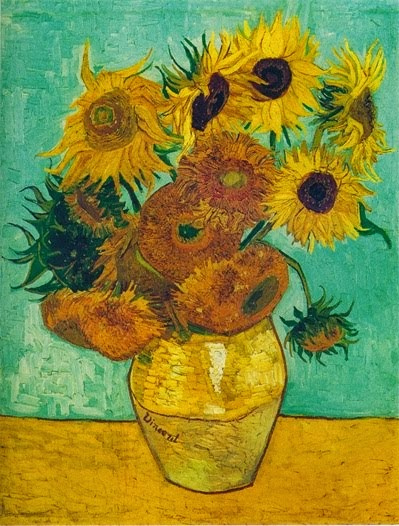

O amarelo vibrante das flores pode evocar:

“Os Girassóis” – Vincent van Gogh
Nostalgia suave e melancólica
0%
Alegria controlada e racional
0%
Neutralidade contemplativa
0%
Sofisticação silenciosa
0%
Energia explosiva e espontânea
0%
Vitalidade intensa com leve tensão emociona
0%
Enviar resposta